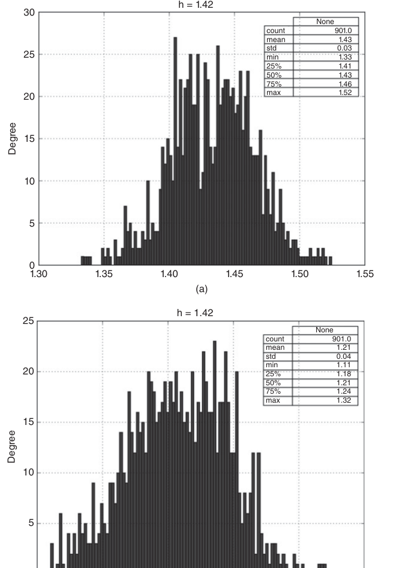
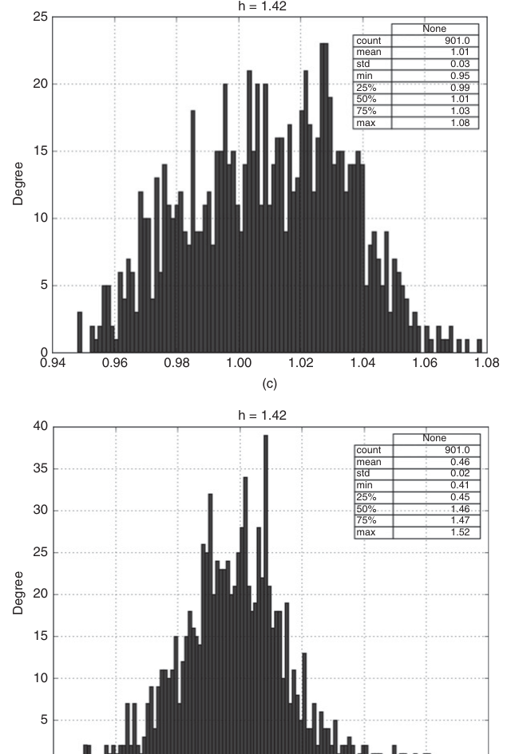
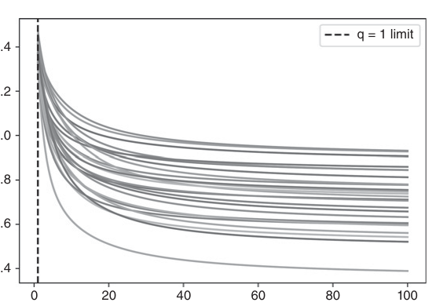

第四部分：有用的金融特征
熵特征
18.1 动机
价格序列传递着关于供需力量的信息。在完美市场中，价格是不可预测的，因为每一个观测值都传递了关于某种产品或服务的全部已知信息。当市场并不完美时，价格在信息不完全的情况下形成，由于部分参与者比其他人掌握更多信息，他们可以利用这种信息不对称性。因此，估计价格序列的信息含量、并构建ML 算法可据以学习可能结果的特征，将大有裨益。例如，ML 算法可能发现，当价格携带的信息较少时，动量策略的获利能力更强；而当价格携带大量信息时，均值回归策略的获利能力更强。本章将探讨衡量价格序列所含信息量的方法。
18.2 Shannon 熵
本节将回顾信息论中的若干概念，这些概念在本章后续内容中将发挥重要作用。读者可在MacKay中找到完整的阐述 [2003]。信息论之父 Claude Shannon 将熵定义为由一个平稳数据源（在长消息意义下）所产生的平均信息量。它是以唯一可解码方式描述该消息所需的每字符最小比特数。在数学上，Shannon [1948] 定义了离散随机变量的熵 \(X\) 其可能取值为 \(x\in A\) 时计算为
与 \(0\le H[X]\le \log_2[\|A\|]\)，其中 \(p[x]\) 是 \(x\) 的概率 \(x\); \(H[X]=0\Leftrightarrow\exists x\mid p[x]=1\); \(H[X]=\log_2[\|A\|]\Leftrightarrow p[x]=1/\|A\|\) 对所有 \(x\)；以及 \(\|A\|\) 是集合的大小 \(A\)。这可以解释为 \(X\) 中信息量的概率加权平均值 \(X\)，其中信息量（比特数）度量为 \(\log_2\frac{1}{p[x]}\)。以这种方式度量信息的合理性源于以下观察：低概率事件所揭示的信息量多于高概率事件。换言之，我们在意外发生时才能有所收获。类似地，冗余度定义为
与 \(0\le R[X]\le1\). Kolmogorov [1965] 正式建立了马尔可夫信息源冗余度与复杂性之间的联系。两个变量之间的互信息定义为联合概率密度与边际概率密度乘积之间的 Kullback-Leibler 散度。
互信息（MI）始终非负、对称，且当且仅当 X 与 Y 相互独立时等于零。对于服从正态分布的变量，互信息与常用的 Pearson 相关系数密切相关， \(\rho\).
因此，互信息是衡量变量间关联的自然度量，无论其关系是线性还是非线性（Hausser and Strimmer [2009]）。归一化信息变差是一种由互信息衍生的度量。关于几种熵估计量，参见：
- 在 R 中： http://cran.r-project.org/web/packages/entropy/entropy.pdf
- 在 Python 中： https://code.google.com/archive/p/pyentropy/
18.3 插件估计量（或最大似然估计量）
在本节中，我们将遵循 Gao 等人关于熵的最大似然估计量的论述。 [2008]。这套命名方式乍看之下可能有些奇特（并无双关之意），但一旦熟悉之后，你会发现它十分便利。给定一个数据序列 \(x_1^n\)，由从位置 1 开始到位置 \(n\)结束的一串值组成，我们可以构建该序列中所有长度为 \(w<n\) 的单词字典， \(A^w\)。考虑一个任意单词 \(y_1^w\in A^w\) ，其长度为 \(w\)。我们记 \(\hat p_w[y_1^w]\) 为单词 \(y_1^w\) 在 \(x_1^n\)中的经验概率，这意味着 \(\hat p_w[y_1^w]\) 是 \(y_1^w\) 在 \(x_1^n\).
中出现的频率。假设数据由平稳遍历过程生成，则大数定律保证，对于固定的 \(w\) 和较大的 \(n\)，经验分布 \(\hat p_w\) 将接近真实分布 \(p_w\)。在此情形下，熵率（即，每比特平均熵）的一个自然估计量为
由于经验分布也是真实分布的最大似然估计，该估计量通常也被称为最大似然熵估计量。值 \(w\) 应足够大，以使 \(\hat H_{n,w}\) 能在可接受范围内接近真实熵 \(H\)。\(n\) 的值需要远大于 \(w\)，以使阶数为 \(w\) 的经验分布接近真实分布。代码清单 18.1 实现了插入式熵估计量。
import time,numpy as np
#---------------------------------------
def plugIn(msg,w):
# Compute plug-in (ML) entropy rate
pmf=pmf1(msg,w)
out=-sum([pmf[i]*np.log2(pmf[i]) for i in pmf])/w
return out,pmf
#---------------------------------------
def pmf1(msg,w):
# Compute the prob mass function for a one-dim discrete rv
# len(msg)-w occurrences
lib={}
if not isinstance(msg,str):
msg=''.join(map(str,msg))
for i in xrange(w,len(msg)):
msg_=msg[i-w:i]
if msg_ not in lib:
lib[msg_]=[i-w]
else:
lib[msg_]=lib[msg_]+[i-w]
pmf=float(len(msg)-w)
pmf={i:len(lib[i])/pmf for i in lib}
return pmf18.4 Lempel-Ziv 估计量
熵可以被理解为复杂度的度量。复杂序列比规律性（可预测）序列包含更多信息。Lempel-Ziv（LZ）算法能够高效地将消息分解为非冗余子串（Ziv and Lempel [1978]）。我们可以将消息的压缩率估计为 Lempel-Ziv 字典条目数量与消息长度之比的函数。其直觉在于，复杂消息具有高熵，相对于待传输字符串的长度，需要更大的字典。代码清单 18.2 展示了 LZ 压缩算法的一种实现。
def lempelZiv_lib(msg):
i,lib=1,[msg[0]]
while i<len(msg):
for j in xrange(i,len(msg)):
msg_=msg[i:j+1]
if msg_ not in lib:
lib.append(msg_)
break
i=j+1
return libKontoyiannis [1998] 尝试更高效地利用消息中可用的信息。下文是对 Gao et al. 中论述的忠实概述。 [2008]。我们将复现该论文中的步骤，并辅以实现其思想的代码清单。定义 \(L_i^n\) 为在以下字符串中找到的最长匹配长度加 1，该字符串为 \(n\) 位之前的 \(i\),
代码清单 18.3 实现了确定最长匹配长度的算法。以下几点值得说明：
- 该值 \(n\) 对于滑动窗口而言是常数，而 \(n=i\) 对于扩展窗口则不然。
- 计算 \(L_i^n\) 需要数据 \(x_{i-n}^{i+n-1}\)。换言之，索引 \(i\) 必须位于窗口的中心位置。这一点至关重要，以确保两个匹配字符串的长度相同。若二者长度不一致， \(l\) 的取值范围将受到限制，其最大值也会被低估。
- 两个子字符串之间允许存在一定的重叠，但显然二者不能同时从 \(i\).
def matchLength(msg,i,n):
# Maximum matched length+1, with overlap.
# i>=n & len(msg)>=i+n
subS=''
for l in xrange(n):
msg1=msg[i:i+l+1]
for j in xrange(i-n,i):
msg0=msg[j:j+l+1]
if msg1==msg0:
subS=msg1
break # search for higher l.
return len(subS)+1,subS # matched length + 1Ornstein 与 Weiss [1993] 正式证明了
Kontoyiannis 利用该结论来估计 Shannon 熵率。他估计 \(L_i^n/\log_2[n]\)的均值，并以该均值的倒数来估计 \(H\)。直觉上，随着可用历史数据的增加，高熵消息所产生的非冗余子串相对较短；相反，低熵消息在解析过程中会产生相对较长的非冗余子串。
给定数据实现 \(x_{-\infty}^{\infty}\)，窗口长度 \(n\ge1\)，以及匹配次数 \(k\ge1\)，滑动窗口 LZ 估计量 \(\hat H_{n,k}=\hat H_{n,k}[x_{-n+1}^{n+k-1}]\) 定义为
类似地，递增窗口 LZ 估计量 \(\hat H_n=\hat H_n[x_0^{2n-1}]\) 定义为
窗口大小 \(n\) 在计算 \(\hat H_{n,k}\)时保持不变，因此 \(L_i^n\)。然而，在计算 \(\hat H_n\)时，窗口大小随 \(i\)时保持不变，因此 \(L_i^i\)，其中 \(n=N/2\)。在这种扩展窗口的情况下，消息的长度 \(N\) 应为偶数，以确保所有比特均被解析（回顾一下， \(x_i\) 位于中心，因此对于奇数长度的消息，最后一个比特将不会被读取）。
上述表达式是在平稳性、遍历性、有限值观测以及 Doeblin 条件的假设下推导得出的。直觉上，该条件要求在经过有限步骤 \(r\)之后，无论之前发生了什么，任何事件均以正概率发生。事实证明，如果我们考虑上述估计量的改进版本，Doeblin 条件可以完全避免：
估计 \(\tilde H_{n,k}\) 时，一个实际问题是如何确定窗口大小 \(n\)。Gao et al. [2008] 认为 \(k+n=N\) 应近似等于消息长度。考虑到 \(L_i^n\) 的偏差为 \(\mathcal{O}[1/\log_2[n]]\) 阶，而 \(L_i^n\) 的方差为 \(\mathcal{O}[1/k]\)阶，则偏差与方差的权衡在约 \(k\approx\mathcal{O}[(\log_2[n])^2]\)处达到平衡。即， \(n\) 可选取使得 \(N\approx n+(\log_2[n])^2\)。例如，对于 \(N=2^8\)，偏差与方差均衡的窗口大小为 \(n\approx198\)，此时 \(k\approx58\)。Kontoyiannis [1998] 证明了 \(\hat H[X]\) 以概率 1 收敛至 Shannon 熵率，当 \(n\) 趋于无穷时。代码清单 18.4 实现了 Gao et al. 所讨论的思路， [2008]，在 Kontoyiannis [1997] 的基础上加以改进，通过寻找两个等长子串之间的最大冗余度来实现。
def konto(msg,window=None):
'''
* Kontoyiannis' LZ entropy estimate, 2013 version (centered window).
* Inverse of the avg length of the shortest non-redundant substring.
* If non-redundant substrings are short, the text is highly entropic.
* window==None for expanding window, in which case len(msg)%2==0
* If the end of msg is more relevant, try konto(msg[::-1])
'''
out={'num':0,'sum':0,'subS':[]}
if not isinstance(msg,str):
msg=''.join(map(str,msg))
if window is None:
points=xrange(1,len(msg)/2+1)
else:
window=min(window,len(msg)/2)
points=xrange(window,len(msg)-window+1)
for i in points:
if window is None:
l,msg_=matchLength(msg,i,i)
out['sum']+=np.log2(i+1)/l # to avoid Doeblin condition
else:
l,msg_=matchLength(msg,i,window)
out['sum']+=np.log2(window+1)/l # to avoid Doeblin condition
out['subS'].append(msg_)
out['num']+=1
out['h']=out['sum']/out['num']
out['r']=1-out['h']/np.log2(len(msg)) # redundancy, 0<=r<=1
return out
#---------------------------------------
if __name__=='__main__':
msg='101010'
print konto(msg*2)
print konto(msg+msg[::-1])此方法的一个警告是熵率是在极限中定义的。用 Kontoyiannis 的话说，“我们固定一个大整数 \(N\) 就像我们数据库的大小一样。” Kontoyiannis 论文中使用的定理证明了渐近收敛性；然而，没有任何地方声称具有单调性。当消息很短时，解决方案可能是多次重复同一消息。
第二个需要注意的是，因为匹配窗口必须是对称的（字典的长度与匹配的子字符串的长度相同），所以只有当消息的长度对应于偶数时才考虑最后一位进行匹配。一种解决方案是删除奇数长度消息的第一位。
第三个警告是，当前面有不规则序列时，一些最后的位将被忽略。这也是对称匹配窗口的结果。例如，“10000111”的熵率等于“10000110”的熵率，这意味着由于第六和第七位中不匹配的“11”，最后一位是不相关的。当消息的结尾特别相关时，一个好的解决方案可能是分析反转消息的熵。这不仅确保使用最终位（即，反转后的初始位），而且实际上它们将用于潜在地匹配每一位。按照前面的示例，“11100001”的熵率为 0.96，而“01100001”的熵率为 0.84。
18.5 编码方案
估计熵需要对消息进行编码。在本节中，我们将回顾文献中使用的一些基于收益率的编码方案。尽管下文没有展开讨论，但建议对来自分数阶（而非整数阶）差分序列的信息进行编码（第 5 章），因为它们仍保留一定记忆性。
18.5.1 二进制编码
熵率估计需要对连续变量离散化，使每个取值都能映射到有限字母表中的一个编码。例如，收益率序列 \(r_t\) 可以根据符号进行编码，1为 \(r_t>0\), 0 为 \(r_t<0\)，删除其中的情况 \(r_t=0\)。在从价格条（即，包含在两个对称水平障碍之间波动的价格，以起始价格为中心）中采样的收益系列的情况下，二进制编码自然出现，因为 \(|r_t|\) 近似恒定。当 \(|r_t|\) 可能取较宽范围的值时，二进制编码会丢失潜在有用信息。这在日内时间 bar 中尤其明显，因为 tick 数据的不均匀性会带来异方差。部分缓解这种异方差的方法，是按照一个从属随机过程对价格采样。交易笔数 bar 和成交量 bar 就是例子：前者包含固定笔数的交易，后者包含固定成交量的交易（见第 2 章）。在这种非日历时间、由市场活动驱动的时钟下，活跃时段采样更频繁，清淡时段采样更稀疏，从而使 \(|r_t|\) 的分布更加规则，并减少对大字母表的需求。
18.5.2 分位数编码
除非使用价格 bar，否则通常需要两个以上的编码。一种做法是为每个 \(r_t\) 按照其所属分位数分配编码。分位数边界由样本内期间（训练集）确定。整体样本内每个字母对应的观测数量相同，样本外每个字母对应的观测数量也接近相同。使用这种方法时，有些编码覆盖 \(r_t\) 取值范围的比例大于其他编码。这种均匀（样本内）或接近均匀（样本外）的代码分布往往会平均增加熵读数。
18.5.3 西格玛编码
另一种方法是不固定编码数量，而让价格流自身决定实际字典。假设固定离散化步长， \(\sigma\)。然后，我们将值 0 赋给 \(r_t\in[\min\{r\},\min\{r\}+\sigma)\), 1 至 \(r_t\in[\min\{r\}+\sigma,\min\{r\}+2\sigma)\)，依此类推，直到每个观察值都被编码为总共 \(\left\lceil\frac{\max\{r\}-\min\{r\}}{\sigma}\right\rceil\) 代码，其中 \(\lceil\cdot\rceil\) 是上限函数。与分位数编码不同，现在每个编码都覆盖 \(r_t\) 取值范围中相同长度的区间。由于代码分布不均匀，平均熵读数往往会小于分位数编码；然而，罕见代码的出现会导致熵读数出现峰值。
18.6 高斯过程的熵
IID 正常随机过程的熵（参见 Norwich [2003]) 可以推导为
对于标准正态， \(H\approx1.42\)。这一结果至少有两个用途。首先，它允许我们对熵估计器的性能进行基准测试。我们可以从标准正态分布中抽取样本，并找到估计器、消息长度和编码的组合为我们提供熵估计 \(\hat H\) 足够接近理论推导值 \(H\)。例如，图 18.1 绘制了使用 Kontoyiannis 方法时，在长度为 100 的消息上，采用 10、7、5 和 2 字母编码得到的熵估计 bootstrap 分布。对于至少 10 个字母的字母表，代码清单 18.4 中的算法给出了正确答案。当字母表过小时，信息会被丢弃，熵被低估。其次，注意到 \(\sigma_H=\frac{e^{H-1/2}}{\sqrt{2\pi}}\)。这为我们提供了熵隐含波动率估计，前提是回报确实是从正态分布中得出的。

(a)-(b)
(c)-(d)18.7 熵和广义均值
这是一种思考熵的有趣方式。考虑一组实数
变量 \(x\) 在权重 \(p\) 、幂次 \(q\ne0\) 下的广义加权平均定义为
当 \(q<0\)，我们必须要求 \(x_i>0\)，对于所有 \(i\)。这是广义平均值的原因是，作为特殊情况可以获得其他平均值：
- 最小值：\[\lim_{q\to-\infty}M_q[x,p]=\min_i\{x_i\}\]
- 谐波平均值：\[M_{-1}[x,p]=\left(\sum_{i=1}^{n}p_i x_i^{-1}\right)^{-1}\]
- 几何平均数：\[\lim_{q\to0}M_q[x,p]=e^{\sum_{i=1}^{n}p_i\log[x_i]}=\prod_{i=1}^{n}x_i^{p_i}\]
- 算术平均值：\[M_1[x,\{n^{-1}\}_{i=1,\ldots,n}]=n^{-1}\sum_{i=1}^{n}x_i\]
- 加权平均值：\[M_1[x,p]=\sum_{i=1}^{n}p_i x_i\]
- 二次平均：\[M_2[x,p]=\left(\sum_{i=1}^{n}p_i x_i^2\right)^{1/2}\]
- 最大值：\[\lim_{q\to+\infty}M_q[x,p]=\max_i\{x_i\}\]
在信息论的背景下，一个有趣的特例是 \(x=\{p_i\}_{i=1,\ldots,n}\)，因此
定义 \(N_q[p]=\frac{1}{M_{q-1}[p,p]}=\left(\sum_{i=1}^{n}p_i^q\right)^{1/(1-q)}\)，对于某些 \(q\ne1\)。同样，对于 \(q<1\) 在 \(N_q[p]\)，我们必须有 \(p_i>0\) 对所有 \(i\)。如果 \(p_i=1/k\) 对 \(k\in[1,n]\) 个不同索引成立，且其他位置满足 \(p_i=0\)，则权重均匀分布在 \(k\) 个不同项目上，并且 \(N_q[p]=k\) 在 \(q>1\) 时成立。换言之， \(N_q[p]\) 给出了 \(p\)中元素的有效数量或多样性，其加权方案由 \(q\).
利用 Jensen 不等式，我们可以证明
较小的值 \(q\) 为分区的元素分配更统一的权重，为不太常见的元素赋予相对更大的权重，并且 \(\lim_{q\to0}N_q[p]\) 只是非零的总数 \(p_i\).
这表明，熵可以解释为列表 \(p\) 中有效项目数的对数，其中 \(q\to1\)。图 18.2 展示了一组随机生成的 \(p\) 数组的对数有效数量如何随着 \(q\) 接近 1 而收敛到 Shannon 熵。

还要注意，当 \(q\) 变大时，它们的行为也会趋于稳定。直观上，熵将信息衡量为随机变量中包含的多样性水平。这种直觉通过广义均值的概念来形式化。这意味着香农熵是多样性度量的特例（因此它与波动性相关）。我们现在可以定义和计算除熵之外的多样性的替代度量，其中 \(q\ne1\).
18.8 熵的一些金融应用
在本节中，我们将介绍熵在金融市场建模中的一些应用。
18.8.1 市场效率
当套利机制充分利用全部机会时，价格会即时反映全部可用信息，因而不可预测（即鞅），也不再呈现可辨识模式。相反，当套利并不完美时，价格只包含不完整信息，从而产生可预测模式。只要字符串包含冗余信息，就存在可压缩的模式。字符串的熵率决定其最优压缩率。熵越高，冗余越低，信息含量越高。因此，价格字符串的熵刻画了某一时点的市场有效程度。“解压缩”的市场是有效市场，因为价格信息没有冗余；“压缩”的市场是低效市场，因为价格信息存在冗余。泡沫形成于压缩的（低熵）市场。
18.8.2 最大熵生成
Fiedor [2014a, 2014b, 2014c] 在一系列论文中建议使用 Kontoyiannis [1997] 估计价格序列中的熵含量。他认为，在各种可能的未来结果中，使熵最大化的结果可能最有利可图，因为它最难被频率派统计模型预测。这类黑天鹅情景最可能触发止损，从而产生反馈机制，强化并放大价格走势，最终在收益率符号序列中形成连续同向运行。
18.8.3 投资组合集中度
考虑一个 \(N\times N\) 协方差矩阵 \(V\)，根据回报计算。首先，我们计算矩阵的特征值分解， \(VW=W\Lambda\)。其次，我们获得因子载荷向量为 \(f_\omega=W^\prime\omega\)，其中 \(\omega\) 是分配向量， \(\sum_{n=1}^{N}\omega_n=1\).
第三，我们得出每个主成分贡献的风险部分（Bailey 和 López de Prado [2012]） 作为
其中 \(\sum_{i=1}^{N}\theta_i=1\)，且 \(\theta_i\in[0,1]\)，对于所有 \(i=1,\ldots,N\)。第四，Meucci [2009] 提出了以下由熵启发的投资组合集中度定义，
乍一看，投资组合集中度的定义可能听起来很惊人，因为 \(\theta_i\) 不是一个概率。浓度和熵的概念之间的联系是由于广义均值而产生的，我们在第 18 章 18.7 节中对此进行了讨论。
18.8.4 市场微观结构
Easley 等人 [1996, 1997] 表明，当好消息/坏消息的概率对称时，知情交易概率（PIN）可推导为
其中 \(\mu\) 是知情交易者的到达率， \(\varepsilon\) 是不知情交易者的到达率，并且 \(\alpha\) 是信息事件的概率。PIN 可解释为知情交易者订单占整体订单流的比例。在规模为 \(V\) 的成交量 bar 内，我们可以根据某种算法将 tick 分类为买方主动或卖方主动，例如 tick rule 或 Lee-Ready 算法。令 \(V_\tau^B\) 为成交量条 \(\tau\) 内买方主动 tick 的成交量之和，\(V_\tau^S\) 为成交量条 \(\tau\) 内卖方主动 tick 的成交量之和。Easley 等人 [2012a, 2012b] 指出 \(\mathbb{E}[|V_\tau^B-V_\tau^S|]\approx\alpha\mu\)，且预期总成交量为 \(\mathbb{E}[V_\tau^B+V_\tau^S]=\alpha\mu+2\varepsilon\)。通过使用成交量时钟（Easley 等人 [2012c]），我们可以将 \(\mathbb{E}[V_\tau^B+V_\tau^S]=\alpha\mu+2\varepsilon=V\) 的值外生设定。这意味着，在成交量时钟下，PIN 简化为
其中 \(v_\tau^B=\frac{V_\tau^B}{V}\)。注意 \(2v_\tau^B-1\) 代表订单流不平衡， \(OI_\tau\)，这是一个有界实值变量，其中 \(OI_\tau\in[-1,1]\)。因此，VPIN 理论在知情交易概率（PIN）与成交量时钟下订单流不平衡的持续性之间建立了正式联系。关于这一市场微观结构理论，更多细节见第 19 章。
持续的订单流不平衡是逆向选择的必要但非充分条件。若做市商要向知情交易者提供流动性，该订单流不平衡 \(|OI_\tau|\) 也一定是相对不可预测的。换句话说，当做市商对订单流不平衡的预测准确时，他们不会受到逆向选择，即使 \(|OI_\tau|\gg0\)。为了确定逆向选择的概率，我们必须确定订单流不平衡的不可预测性。我们可以通过应用信息论来确定这一点。
考虑一长串符号。当该序列包含很少的冗余模式时，它所包含的复杂程度使其难以描述和预测。科尔莫戈洛夫 [1965] 阐述了冗余和复杂性之间的联系。在信息论中，无损压缩是用尽可能少的比特完美描述序列的任务。序列包含的冗余越多，可以实现的压缩率就越高。熵表征了源的冗余性，因此具有柯尔莫哥洛夫复杂性和可预测性。我们可以利用序列的冗余性与其不可预测性（做市商）之间的联系来推导逆向选择的概率。
这里讨论一个具体流程：将逆向选择概率推导为订单流不平衡内在复杂度的函数。第一，给定一系列以 \(\tau=1,\ldots,N\) 为索引、每个 bar 大小为 \(V\) 的成交量 bar，我们确定归类为买方主动成交量的比例， \(v_\tau^B\in[0,1]\)。第二，计算 \(q\) 个分位点来划分 \(\{v_\tau^B\}\)，用它们定义集合 \(K\) 中的 \(q\) 个互不相交子集， \(K=\{K_1,\ldots,K_q\}\)。第三，我们从每个数据中生成一个映射 \(v_\tau^B\) 到不相交子集之一， \(f:v_\tau^B\to\{1,\ldots,q\}\)，其中 \(f[v_\tau^B]=i\Leftrightarrow v_\tau^B\in K_i\) 对所有 \(i\in[1,q]\)。第四，对 \(\{v_\tau^B\}\) 进行量化：为每个 \(v_\tau^B\) 分配其所属子集 \(K\) 的索引，即 \(f[v_\tau^B]\)。这会把订单流不平衡集合 \(\{v_\tau^B\}\) 转换为量化消息 \(X=[f[v_1^B],f[v_2^B],\ldots,f[v_N^B]]\)。第五，使用 Kontoyiannis 的 Lempel-Ziv 算法估计熵 \(H[X]\)。第六，我们推导累积分布函数， \(F[H[X]]\)，并使用时间序列 \(\{F[H[X_\tau]]\}_{\tau=1,\ldots,N}\) 作为预测逆向选择的特征。
脚注
- 1 或者，如果协方差矩阵是根据价格变化计算的，我们可以使用持有量向量。 返回正文
参考文献
- Bailey, D. and M. López de Prado (2012): “Balanced baskets: A new approach to trading and hedging risks.” Journal of Investment Strategies, Vol. 1, No. 4, pp. 21–62. Available at https://ssrn.com/abstract=2066170.
- Easley, D., M. Kiefer, M. O’Hara, and J. Paperman (1996): “Liquidity, information, and infrequently traded stocks.” Journal of Finance, Vol. 51, No. 4, pp. 1405–1436.
- Easley, D., M. Kiefer, and M. O’Hara (1997): “The information content of the trading process.” Journal of Empirical Finance, Vol. 4, No. 2, pp. 159–185.
- Easley, D., M. López de Prado, and M. O’Hara (2012a): “Flow toxicity and liquidity in a high frequency world.” Review of Financial Studies, Vol. 25, No. 5, pp. 1457–1493.
- Easley, D., M. López de Prado, and M. O’Hara (2012b): “The volume clock: Insights into the high frequency paradigm.” Journal of Portfolio Management, Vol. 39, No. 1, pp. 19–29.
- Gao, Y., I. Kontoyiannis and E. Bienenstock (2008): “Estimating the entropy of binary time series: Methodology, some theory and a simulation study.” Working paper, arXiv. Available at https://arxiv.org/abs/0802.4363v1.
- Fiedor, Pawel (2014a): “Mutual information rate-based networks in financial markets.” Working paper, arXiv. Available at https://arxiv.org/abs/1401.2548.
- Fiedor, Pawel (2014b): “Information-theoretic approach to lead-lag effect on financial markets.” Working paper, arXiv. Available at https://arxiv.org/abs/1402.3820.
- Fiedor, Pawel (2014c): “Causal non-linear financial networks.” Working paper, arXiv. Available at https://arxiv.org/abs/1407.5020.
- Hausser, J. and K. Strimmer (2009): “Entropy inference and the James-Stein estimator, with application to nonlinear gene association networks,” Journal of Machine Learning Research, Vol. 10, pp. 1469–1484. http://www.jmlr.org/papers/volume10/hausser09a/hausser09a.pdf.
- Kolmogorov, A. (1965): “Three approaches to the quantitative definition of information.” Problems in Information Transmission, Vol. 1, No. 1, pp. 1–7.
- Kontoyiannis, I. (1997): “The complexity and entropy of literary styles”, NSF Technical Report # 97.
- Kontoyiannis (1998): “Asymptotically optimal lossy Lempel-Ziv coding,” ISIT, Cambridge, MA, August 16–August 21.
- MacKay, D. (2003): Information Theory, Inference, and Learning Algorithms, 1st ed. Cambridge University Press.
- Meucci, A. (2009): “Managing diversification.” Risk Magazine, Vol. 22, pp. 74–79.
- Norwich, K. (2003): Information, Sensation and Perception, 1st ed. Academic Press.
- Ornstein, D.S. and B. Weiss (1993): “Entropy and data compression schemes.” IEEE Transactions on Information Theory, Vol. 39, pp. 78–83.
- Shannon, C. (1948): “A mathematical theory of communication.” Bell System Technical Journal, Vol. 27, No. 3, pp. 379–423.
- Ziv, J. and A. Lempel (1978): “Compression of individual sequences via variable-rate coding.” IEEE Transactions on Information Theory, Vol. 24, No. 5, pp. 530–536.
参考书目
- Easley, D., R. Engle, M. O’Hara, and L. Wu (2008): “Time-varying arrival rates of informed and uninformed traders.” Journal of Financial Econometrics, Vol. 6, No. 2, pp. 171–207.
- Easley, D., M. López de Prado, and M. O’Hara (2011): “The microstructure of the flash crash.” Journal of Portfolio Management, Vol. 37, No. 2, pp. 118–128.
- Easley, D., M. López de Prado, and M. O’Hara (2012c): “Optimal execution horizon.” Mathematical Finance, Vol. 25, No. 3, pp. 640–672.
- Gnedenko, B. and I. Yelnik (2016): “Minimum entropy as a measure of effective dimensionality.” Working paper. Available at https://ssrn.com/abstract=2767549.